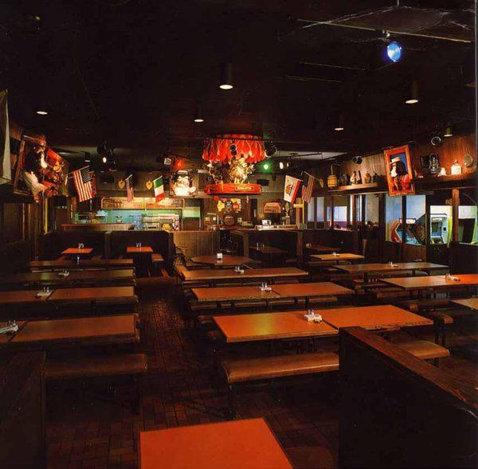

Blog
Catch up on all the latest news
Unusual Prototype 3 Stage
Origins: Unknown
Description: A picture of Centre Stage with all prop characters, excluding the Singing Flowers. The character cosmetics are quite different,
with Munch Jr missing his hat, Building and Moon both having light blue cosmetics, and the building props are substantially different.
Not to mention the sign does not feature a green outline, and both Munch Jr's can and Jasper's can are upside down. Jasper also features an
unusual guitar color. This stage is incredibly odd.
Year: Early 90s(?), judging by Helen's mask.
Location: 3-Stage, Unknown
Submitted by: randombeans
Extremely Rare Data needed
Cyberamic Singing Flower Ripped Mask
Origins: Unknown
Description: Believed to be a Cyberamic Singing Flower mask, judging by the eyes and mask. Unsure where this is from or why it is ripped off.
Year: Unknown, possibly early 2000s/early 1990s(?)
Location: Unknown, perhaps Corporate?
Submitted by: randombeans
Extremely Rare Data needed
Flipped Balcony Stage
Origins: Smile America 80s Commercial
Description: Featured in the Smile America commercial, Pasqually and Munch have swapped places. It could be the Showboat stage, but would not make sense, as the camera would have the balcony stage on the left, not the right.
Year: Early 80s
Location: Balcony Stage, Unknown
Submitted by: randombeans
Extremely Rare Data needed
Odd Moon Variant
Origins: Unknown
Description: A 3-Stage moon with an unusual color scheme. Most likely painted on by a cast member.
Year: Late 80s, Early 90s(?)
Location: 3-Stage, Unknown
Submitted by: Galla
Rare Data needed

Skinless Helen
Origins: An image can be seen here: https://images.app.goo.gl/sjw8Gmgkm5h9h2kZA
Description: Road Stage Helen but missing her chest, leaving the mech exposed.
Year: Late 80s, Early 90s(?)
Location: Road Stage, Springfield PA
Submitted by: randombeans
Rare Data needed
CEC V1 Bot
Origins: Unknown
Description: This is one of the first bots that came into the first Pizza Time Theatre location. There are barely any pictures of it left, and no footage whatsoever.
Year: Late 70s
Location: Portrait Stage, Winchester
Submitted by: randombeans
Rare Data needed
Kooser Bots
Origins: Unknown
Description: Kooser is the second PTT location to open up, and had a different selection of bots, including Mr Munch instead of Crusty. There is a few pieces of footage of the bots on Youtube, and not much exists from that.
Year: Late 70s
Location: Portrait Stage, Kooser Rd
Submitted by: randombeans
Rare Data needed

Winchester
Origins: Unknown
Description: Winchester was the first ever Pizza Time Theatre location to open up, and not much footage exists of it. There are few photos of the bots, and most of them are low quality.
Year: Late 70s
Location: Portrait Stage, Winchester
Submitted by: randombeans
Rare Data needed
Band Board
Origins: Picture is from a PTT Training Video, there are not many photos of it left.
Description: The Band Board is a animatronic shelf of instruments which would play along with songs. Not much audio is left of it, and there is no video of it operating yet. A certain PTT promo includes some spotlights shining on the bass/snare drums very faintly (https://youtu.be/MYIUxp9TTuw?t=100). Not much is known if they had spotlights or not.
Year: Late 70s, Early 80s
Location: Balcony Stage & Portrait Stage, Various Locations
Submitted by: randombeans
Uncommon Data needed